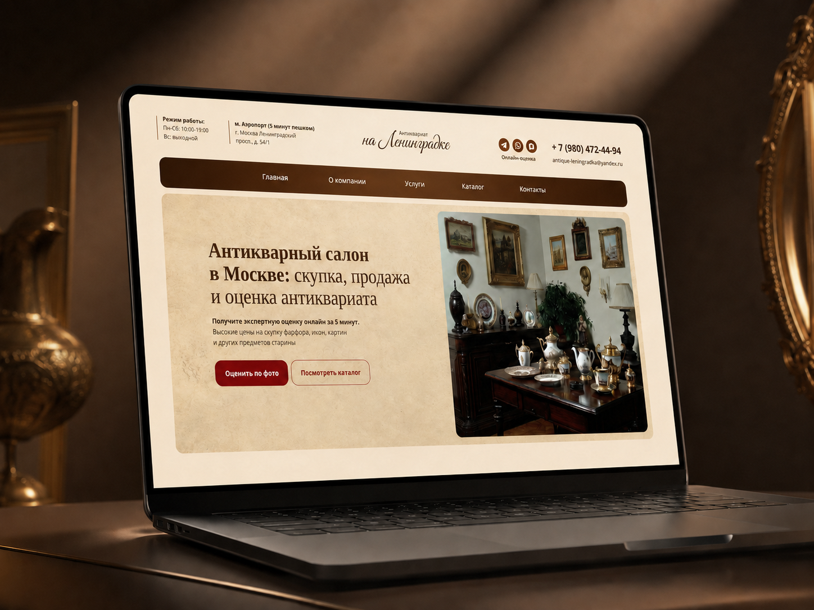
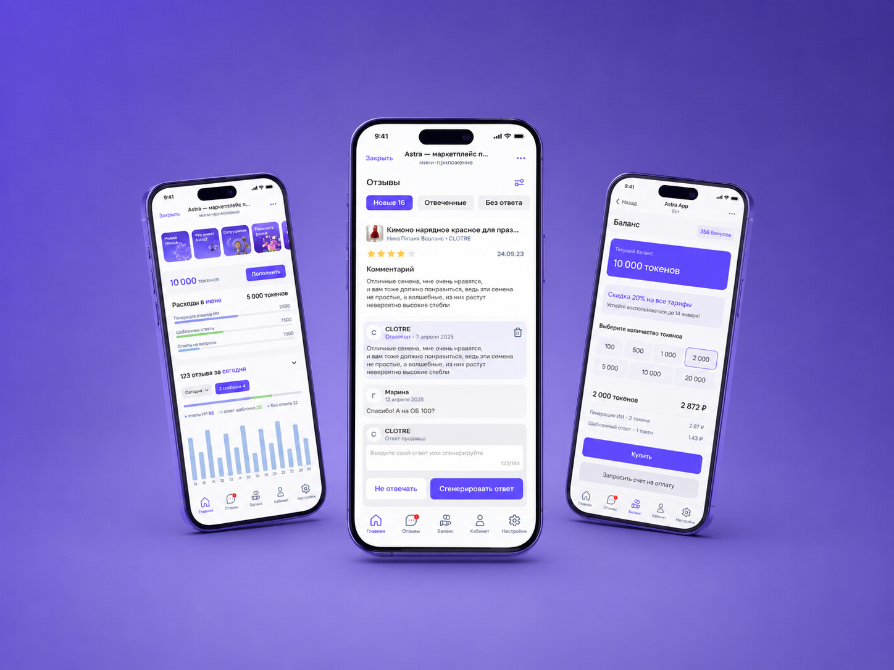
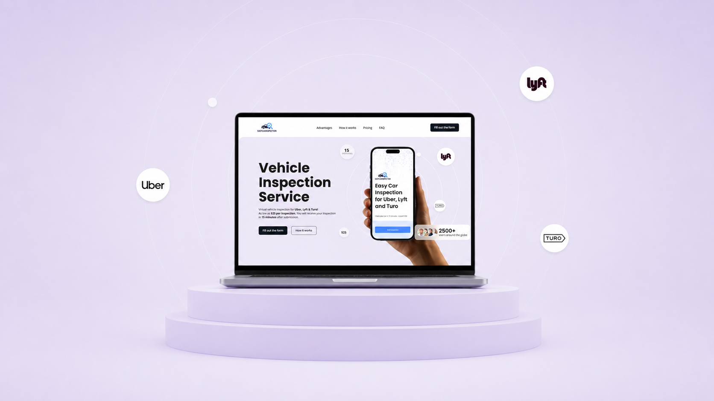
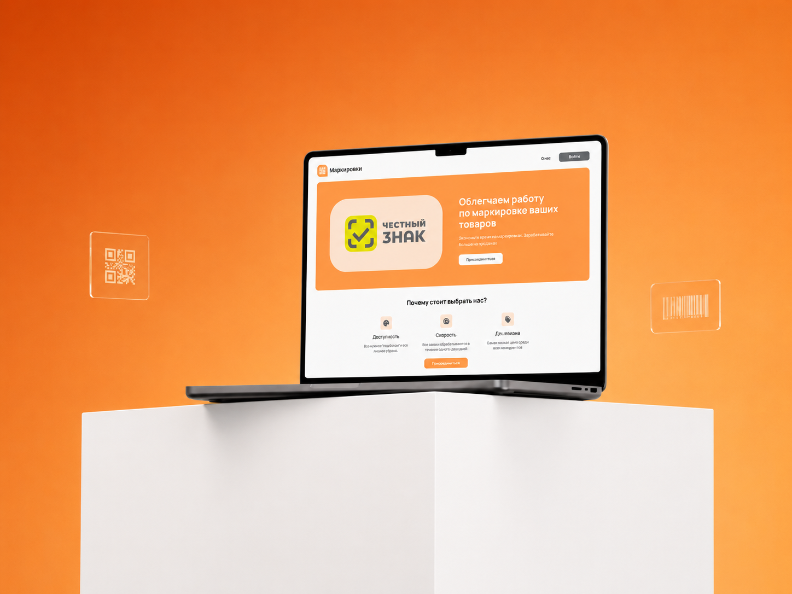
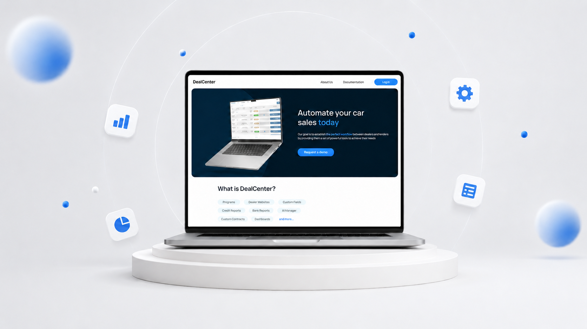

Fullstack-разработка
Продуманный фронтенд на React и Next.js и надёжный бэкенд — без техдолга.
Проектирую ИИ-агентов, RAG-системы, чат-боты, CRM и highload-бэкенды — от идеи и MVP до надёжного продакшена на современном стеке.
Беру сложные требования.
Превращаю их в продукты, которыми пользуются.
Берусь за задачи, где нужны и продукт, и инженерия: от MVP до production-системы, которой пользуются каждый день.
Продуманный фронтенд на React и Next.js и надёжный бэкенд — без техдолга.
Связываю сервисы и API и автоматизирую рутину: платёжки, маркетплейсы, CRM, документооборот, ETL.
Серверная архитектура под нагрузку: очереди, кеш и микросервисы, которые держат пик.
Внутренние системы, которые ускоряют работу команды: понятные дашборды, автоматизация процессов и контроль данных.
ИИ, который приносит пользу: автономные агенты, чат-боты с поиском по вашим данным (RAG) и аккуратная интеграция LLM в продукт.
Понятный маршрут с фиксированными точками. Вы всегда знаете, на каком этапе проект и что дальше.
Погружаюсь в бизнес-цели и требования, фиксирую границы и критерии готовности. Чёткий скоуп — половина успеха проекта.
Подбираю стек под задачу и проектирую архитектуру: API, модель данных, интеграции и точки роста под нагрузку.
Fullstack на современном стеке — TypeScript и Python. ИИ-инструменты ускоряют рутину, а решения и качество остаются за мной.
Автотесты, smoke-проверки и ревью. Ловлю проблемы до продакшена, а не после жалоб пользователей.
Деплой, CI/CD и мониторинг. Передаю код, доступы и документацию — всё остаётся у вас.
Реальные проекты из моего опыта — от CRM для автобизнеса до ИИ-агентов в Сбере. Нажмите на карточку, чтобы открыть детали.
Задача: Дать инженерам и дизайнерам ИИ-помощника по дизайн-системе.
Результат: Универсальный агент со скиллами, MCP-сервер с RAG и чат-бот для дизайнеров.

Задача: Сделать антикварному салону полноценный корпоративный сайт с каталогом и онлайн-оценкой по фото.
Результат: Многостраничный сайт с каталогом, админкой и SEO — поток обращений из поиска.

Задача: Развить SaaS для автоматических ИИ-ответов продавцам.
Результат: Скорость вывода фич ×2, ИИ дорос до агентского воркфлоу с RAG.

Задача: Сделать сайт для продажи онлайн-отчётов об осмотре авто.
Результат: Гибрид WordPress + Next.js с оплатой Stripe и конверсией 4–5% в день.

Задача: Запустить сервис, упрощающий маркировку товаров.
Результат: Рабочий MVP на Next.js: приём и обработка заявок на маркировку.

Задача: Построить CRM для автокредитного бизнеса с нуля до прода.
Результат: Highload-CRM с интеграциями Stripe, DocuSign и ETL — работа команды ×2.
AI-агентов и LLM-интеграции, RAG-системы и чат-ботов, fullstack веб-приложения, API-интеграции и автоматизацию, CRM и админ-панели, highload-бэкенд. Если задача на стыке продукта и инженерии — это ко мне.
Да — работаю удалённо по всему миру. Есть опыт англоязычных проектов: CRM для автобизнеса в США, сервис осмотров авто для Uber, Lyft и Turo. Общаюсь на русском и английском и подстраиваюсь под ваш часовой пояс.
TypeScript и Python как основа. React, Next.js, Node.js, FastAPI; PostgreSQL и MongoDB; Docker и CI/CD; LangChain, LangGraph, MCP и Kafka для ИИ и нагруженных систем. Технологии выбираю под задачу, а не под моду.
Да — и в продукте, и в процессе. Строю ИИ-агентов, RAG и LLM-интеграции там, где они дают ценность. ИИ ускоряет рутину, но архитектуру, решения и качество я держу под контролем сам.
Покрываю код автотестами и smoke-проверками, делаю ревью и настраиваю CI/CD. После запуска передаю код, доступы и документацию и остаюсь на связи по доработкам.
Напишите в Telegram пару слов о задаче — отвечу, задам уточняющие вопросы и предложу, как её решить и сколько это займёт.
Расскажите о задаче — отвечу в Telegram и предложу, как её решить.